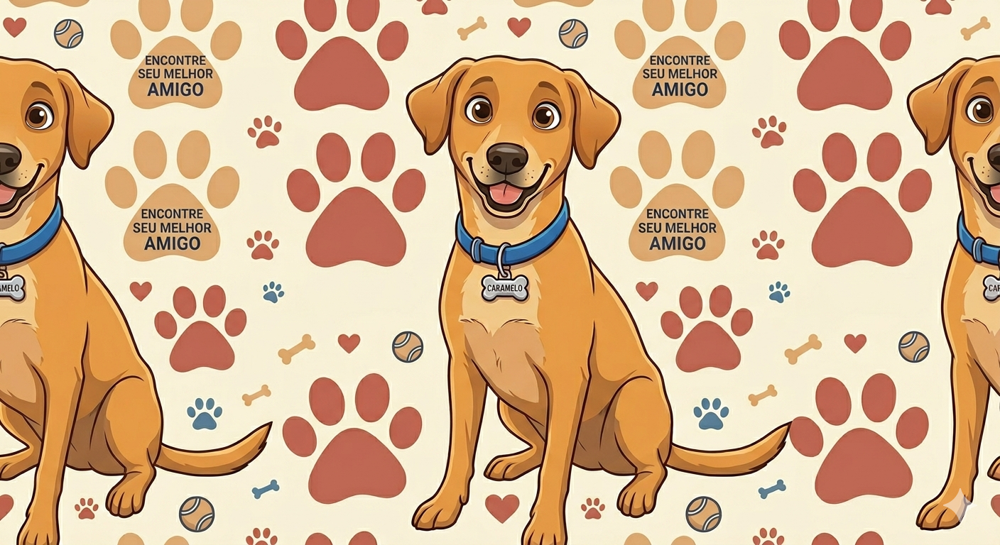

Conheça nossa história e missão

A AMAQI – Amigos dos Animais de Quedas do Iguaçu nasceu em 2016 do coração de pessoas apaixonadas por animais que não podiam mais ficar de braços cruzados diante do abandono nas ruas da cidade.
Começamos pequenos, resgatando, cuidando e encontrando lares. Com o tempo, construímos uma rede de voluntários dedicados, parceiros veterinários e famílias adotantes que compartilham os mesmos valores.
Hoje somos uma das principais organizações de proteção animal da região Sudoeste do Paraná, com centenas de histórias de amor que começaram com um resgate.
Faça Parte desta HistóriaResgatar, cuidar e encontrar lares responsáveis para animais em situação de vulnerabilidade.
Um Quedas do Iguaçu onde nenhum animal viva abandonado nas ruas, com políticas públicas de proteção animal eficazes.
Todo animal merece cuidado, respeito e um lar seguro cheio de amor.
Promovemos a adoção responsável, garantindo que cada animal vá para o lar certo.
Acreditamos que a mudança acontece quando a comunidade se une por uma causa.
Lutamos contra o abandono e maus tratos, sendo a voz dos que não podem falar.
Pessoas que doam seu tempo e coração pelos animais
Seja voluntário, padrinho ou adotante. Cada forma de ajuda salva vidas.